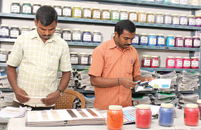

PREPARATORY
At our Pilot sample plant, we develop 100 new shades everyday and produce around 300 samples per day. The sampling unit has a capacity to manufacture 5 to 50 kgs of samples. This is the only unit to offer photoshoot samples for our esteemed customers.
The Web Matching area is where the exactitude of the shade required by the customer is produced with different color combinations of fibre.
At the gigantic warehouse which houses the cotton godown, dyed cotton godown and synthetic fibre godown, computer interfaced weighing and bar coding helps identify and stock raw materials in a proper layout.